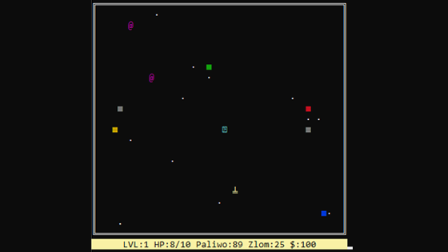
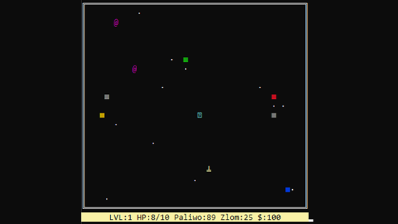
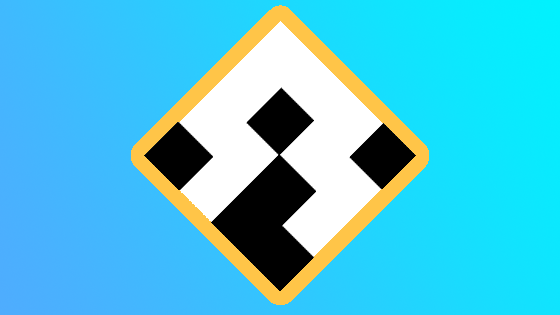

e-mail: mikolaj.hanslik@gmail.com
Cześć!
Nazywam się Mikołaj Hanslik i jestem Game Developerem. Głównie zajmuję się programowaniem różnych systemów i mechanik gier, ale interesuje mnie również proceduralna generacja oraz shadery.
Umiejętności
-
Unity (8 lat)
-
Unreal Engine (2 lata)
-
Blender (+10 lat)
-
Git (4 lata)
-
Hack'n'Plan (3 lata)
-
Azure DevOps (rok)
-
C# (6 lat)
-
C++ (4 lata)
-
GLSL/Shader Graph (4 lata)
-
Js (3 lata)
-
Python (rok)
Doświadczenie
Marching Bits
2019-2020
World Tree
Trójwymiarowa strategia czasu rzeczywistego w świecie fantasy. Projekt tworzony był na silniku Unity w systemie ECS. Pracowałem nad tą grą w małym, niezależnym zespole, w którym miałem spory zakres obowiązków. Głównie zajmowałem się programowaniem różnych systemów, ale pisaniem również shadery i pomagałem przy łączeniu wszystkich elementów w całość.
Co zrobiłem:
- System znoszenia surowców do magazynu, na place budowy i do miejsc pracy.
- System przydzielania prac osadnikom.
- System stawiania budynków/placów konstrukcji na siatce mapy ze sprawdzaniem wolnych komórek.
- System rozwoju budynków i dostawiania do nich rozszerzeń.
- System grupowania jednostek i przypisywania do nich skrótu klawisza.
- Shader siatki konstrukcji budynków z możliwością wyświetlania miejsc zajętych.
- Shader minimapy.
- Shader oznaczenia jednostek, budynków i przeciwników.
- Shader i animacja strzałki akcji.
- I wiele więcej.
Uczelnia Collegium Da Vinci w Poznaniu
2015-2019
Informatyka o specjalizacji "Game Desing"
Ukończenie uczelni wyższej z tytułem Inżynier.
Koło naukowe
Prowadziłem przez rok koło naukowe, gdzie wspólnie z uczestnikami tworzyliśmy projekty i dzieliłem się swoją wiedzą na temat tworzenia gier.
Początki
2008-2015
Wydanie swojej pierwszej gry Cubye
Stworzyłem i wydałem grę na platformie Google Play.
Twitch.tv
Pomagałem za darmo jak i za małe dotacje różnym twórcom gier, których znajdywałem na platformie Twitch.tv w dziale "Creative".
Prototypowanie
Nabywałem wiedzę programistyczną poprzez prototypowanie swoich pomysłów na silniku Unity.
Start
Zacząłem swoją przygodę z tworzeniem gier pod koniec podstawówki. Tworzyłem modele i prostą logikę w programie Blender, bawiłem się różnymi silnikami jak na przykład RPG maker oraz tworzyłem mody do gry Postal.
Interaktywny śnieg
Shader imitujący śnieg oraz compute shader głębi wychwytywanej przez kamerę umieszczoną pod fragmentem mapy. Śnieg oddziałuje na dowolny kształt wchowdzący z nim w interakcję i z czasem regeneruje się do pierwotnego stanu.
Auto Road
Zoptymalizowany algorytm generujący drogę do gry typu endless runner.


Bad Call
Córka detektywa zostaje porwana i na stół powróciło stare zlecenie.
Wciel się w skórę głównego bohatera, rozwiązuj zagadki i uratuj córkę.
Projekt uczelniany stworzony w ograniczonym czasie w spółpracy z grafikiem oraz aktorem głosowym.
Co zrobiłem: Fabuła, wszystkie skrypty (np. ekwipunek, interakcje, wyświetlanie ikon interakcji itp.), pomoc przy modelach, głos złoczyńcy, poskładanie wszystkiego w całość.


Mail-Man
Trójwymiarowa gra zręcznościowa typu arcade.
Miasto potrzebuje Super-Listonosza, który za zadanie ma roznieść jak najwięcej
paczek zanim skończy się jego zmiana.
Do dyspozycji ma specialny pistolet,
którego super mocą są dwie elektromagnetyczne sprężyny,
pozwalające na przyciągnięcie do siebie paczki oraz pozwalające na podróżowanie przez miasto niczym spider-man.
Projekt ten został stworzony z przyjacielem w 48h na GMTK Game-Jam.

Bunny
Prototyp prostej gry logiczno-przygodowej, w której prowadzimy ciekawskiego królika przez zaczarowany las. Gracz do dyspozycji ma jedynie kursor (świetlik), za którym królik stara się podążać.
 


Galactic War
Gra działająca w konsoli systemu Windows.
Dostosuj swój statek, przemierzaj proceturalnie generowany kosmos i walcz z wrogimi statkami.
Na swojej drodze napotkasz sklepy, wrogie bazy oraz planety, których to mieszkańców możesz bronić przed najazdami.
Walka polega na zużywaniu co turę punktów energii,
które przeznaczyć możesz na zasilenie jednej z trzech tarcz, naprawę, bądź też doładowanie jednej z trzech broni.
Sterowanie:
WASD: poruszanie się/zmiana opcji.
ENTER: akceptacja wyboru.

Cubye
Prosta gra na urządzenia mobilne służąca do trenowania pamięci krótkotrwałej. Na początku rozgrywki wyświetlany jest losowo generowany wzór, który później trzeba odnaleźć na kostce, którą użytkownik może dowolnie obracać ruchem palca. Z każdym znalezionym wzorem użytkownik jest nagradzany i zwiększny jest poziom trudności.

Edytor Szumu Perlina
Wielowarstwowy edytor i generator szumu Perlina.

Zwięrzęta dla Frinlet
Tworzyłem swojego czasu modele zwierząt w stylu low-poly do projektu gry przeglądarkowej "Frinlet".
Gra sama w sobie jest inspirowana Animal Crossing oraz Minecraft-
Proceduralnie generowany świat z bogatymi w faunę i florę biomami oraz miasta pełne sklepów i NPC.
Głównym celem gry jest zwiedzanie świata i odkrywanie nowych gatunków zwierząt oraz roślinności.
Przez pewien okres aplikacja działała jako narzędzie dla dzieci do nauki języka angielskiego.